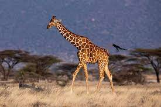

Bee Movie Script - Dialogue Transcript
Voila! Finally, the Bee Movie script is here for all you fans of the Jerry Seinfeld animated movie.
This puppy is a transcript that was painstakingly transcribed using the screenplay and/or viewings of the movie to get the dialogue.
I know, I know, I still need to get the cast names in there and all that jazz, so if you have any corrections, feel free to drop me a line.
